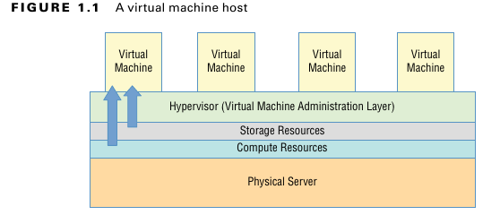
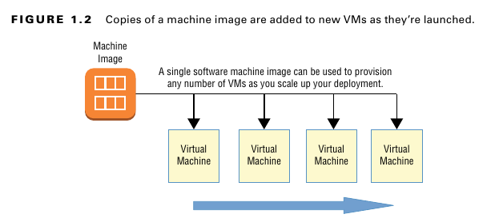
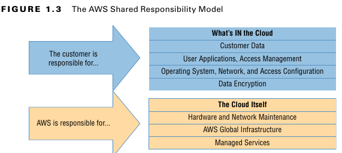
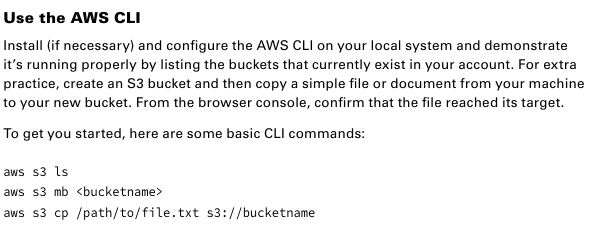
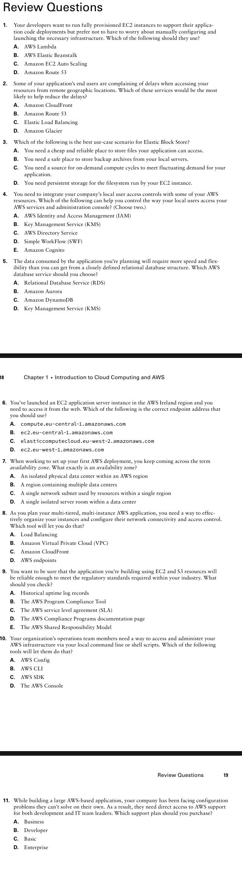

مقدمة عن الـ Cloud Computing و AWS
الـ Cloud هو المكان اللي بيحصل فيه معظم الشغل الجامد في التكنولوجيا والتطوير اليومين دول. و AWS بالذات، أكتر من أي platform تانية، هي اللي الشركات والمؤسسات الكبيرة بتختارها عشان تشغّل عليها الـ workloads بتاعتها.
فلو عايز تبقى AWS Solutions Architect شاطر، لازم الأول تفهم يعني إيه Cloud بجد، وإزاي الجزء بتاع أمازون ده شغال.
وعشان تبقى لامم الدنيا صح، الشابتر ده هيوريك الأساسيات دي:
✅ إيه اللي بيميّز الـ Cloud Computing عن أي applications تانية أو الـ client-server models؟
✅ إزاي الـ platform بتاعت AWS بتوفرلك virtual networked environments آمنة ومرنة عشان تحط عليها الـ resources بتاعتك.
✅ إزاي AWS بتقدم مستوى عالي أوي كده من الـ service reliability (يعني إزاي الخدمة بتاعتهم صعب أوي إنها تقع).
✅ إزاي تعمل access وتتحكم في الـ resources بتاعتك اللي على AWS.
✅ تروح فين عشان تلاقي الـ documentation والمساعدة اللي هتحتاجها في الـ deployments بتاعتك على AWS.
الـ Cloud Computing والـ Virtualization
التكنولوجيا اللي هي أساس وقلب كل عمليات الـ Cloud هي الـ Virtualization.
زي ما باين في شكل 1.1، الـ Virtualization بتخليك تقسم الـ hardware resources بتاعت physical server واحد (يعني سيرفر حقيقي ملموس) لوحدات أصغر. وبكده، الـ physical server ده يقدر يشغّل كذا virtual machine (VM) في نفس الوقت، كل واحدة فيهم شغّال عليها الـ operating system الكامل بتاعها، وليها الـ memory والـ storage والـ network access الخاصين بيها.

المرونة بتاعة الـ Virtualization دي بتخليك تقدر تعمل provision (يعني تجهّز وتشغّل) سيرفر virtual في ثواني، وتشغّله بالظبط على قد الوقت اللي مشروعك محتاجه، وبعدين تقفله خالص. والـ resources اللي فضيت دي بتبقى متاحة فورًا لأي workloads تانية.
كثافة الاستخدام اللي بتوصلها دي بتخليك تعصر الـ hardware بتاعك وتستفيد منه لآخر نقطة، وبتسهّل عليك أوي إنك تعمل environments للتجارب أو sandboxed environments (بيئات معزولة عشان تختبر فيها براحتك).
الـ Architecture بتاعت الـ Cloud Computing
الـ providers الكبار زي AWS عندهم server farms عملاقة، فيها ميات الآلاف من الـ servers والـ disk drives بيتعملها صيانة، ومعاهم كل كابلات الـ network اللي محتاجينها عشان يوصلوهم ببعض. أي virtualized environment معمولة صح ممكن تديلك virtual server بيستخدم storage و memory و compute cycles و network bandwidth متجمّعين من أكفأ توليفة يلاقيها من الـ resources المتاحة.
الـ platform بتاعت الـ Cloud Computing بتوفرلك وصول on-demand و self-service (يعني وقت ما تحتاج وبتخدم نفسك بنفسك) لـ compute resources متجمعة، واستهلاكك بيتقاس وبتتحاسب عليه على قد الكمية اللي بتستخدمها بالظبط. أنظمة الـ Cloud Computing بتسمح بنماذج محاسبة دقيقة جداً، لدرجة إنك أحياناً بتتحاسب بملاليم على الساعة اللي استهلكتها.
إزاي تستفيد من الـ Cloud Computing لأقصى درجة
الـ Cloud اختيار هايل لأي workloads جد أو تقيلة، لأنه scalable و elastic، وفي الغالب أرخص بكتير من الحلول التقليدية. وعشان تعمل deployment و provision صح، لازم تكون فاهم كويس التلات مميزات دول.
الـ Scalability
الـ infrastructure الـ scalable بتقدر بكفاءة تواجه أي زيادة مفاجئة في الطلب على الـ application بتاعك، عن طريق إنها بتزوّد resources بشكل أوتوماتيكي. وزي ما باين في شكل 1.2، ده في الغالب معناه إنها بتزوّد بشكل ديناميكي عدد الـ virtual machines (أو instances زي ما AWS بتسميها) اللي شغالة عندك.
شكل 1.2
*نسخ من الـ machine image بتتحط على VMs جديدة كل ما بتشتغل.
AWS بتقدملك خدمة الـ autoscaling بتاعتها، واللي من خلالها أنت بتحدد machine image معينة، والـ image دي بتتعملها replicate (يعني بتتاخد منها نسخ) وبتشتغل في ساعتها وبشكل أوتوماتيكي على كذا instance عشان تسد الطلب الزيادة.
الـ Elasticity (المرونة)
فكرة الـ elasticity شبه الـ scalability في حتت، الاتنين بيتكلموا عن إزاي الـ system بيتعامل مع الطلب المتغير. بس الفرق بقى، إن الـ scalability بتخليك تزود الـ capacity عشان تواجه الطلب العالي، لكن الـ infrastructure الـ elastic بتقلل الـ capacity دي أوتوماتيك لما الطلب يقل. وده بيخليك تتحكم في التكاليف، عشان أنت بتشغل الـ resources بس لما تكون محتاجها.
إدارة التكاليف (Cost Management)
غير إنك بتعرف تتحكم في المصاريف عن طريق إنك بتدير الـ resources اللي بتستخدمها كويس، الـ Cloud Computing بينقل مصاريف الـ IT بتاعتك من نظام الـ capital expenditure (capex) لحاجة أقرب للـ operational expenditure (opex).
طب ده معناه إيه عمليًا؟ معناه إنك مبقتش محتاج تدفع 10,000 دولار كاش ومقدم لكل server جديد هتجيبه، ده غير طبعًا مصاريف الكهربا والتبريد والأمن والمكان اللي هتحطه فيه. بدل كل ده، أنت بتتحاسب بمبالغ صغيرة متقطعة طول ما الـ application بتاعك شغال.
ده مش معناه بالضرورة إن مصاريف الـ opex بتاعتك على المدى الطويل هتبقى دايمًا أقل من اللي كنت هتدفعه على عمر data center مشابه. بس معناه إنك مش هتضطر تعرض نفسك لمخاطرة التخمين باحتياجاتك على المدى البعيد. ولو في المستقبل الطلب اتغير وبقيت محتاج hardware جديد، AWS هتوفرهولك في دقيقة ولا اتنين.
وعشان تساعدك تفهم القصة الكاملة لمصاريف الـ Cloud، AWS موفرة Total Cost of Ownership (TCO) Calculator ببلاش على اللينك ده: aws.amazon.com/tco-calculator.
الـ calculator دي بتساعدك تعمل مقارنة صح بين تكاليف الـ data center بتاعك حاليًا وتكاليف نفس الشغلانة دي على AWS هتبقى كام.
الـ AWS Cloud
إنك تفضل متابع سيل الخدمات الجديدة اللي بتظهر على الـ AWS Console ممكن يكون موضوع محبط شوية. بس أنت كـ solutions architect، تركيزك الأساسي المفروض يكون على فئات الخدمات الأساسية (core service categories). الجزء ده بيلخص كل فئة من الفئات الأساسية دي (زي ما باين في جدول 1.1) وبعدين بيعمل نفس الكلام للخدمات المهمة نفسها. أنت كده كده هتتعلم أكتر عن كل دول (وغيرهم) في باقي الكتاب، بس مهم تركز في التعريفات الصغيرة دي، عشان هي الأساس لكل حاجة هتتعلمها بعد كده.
عينيا يا باشا، أهو الجدول كله على بعضه في حتة واحدة:
جدول 1.1: فئات الخدمات في AWS (كله على بعضه)
| الـ Category | الوظيفة |
|---|---|
| Compute | دي الخدمات اللي بتعمل نفس شغلانة السيرفرات العادية، بس على الـ Cloud. وبتديلك إعدادات متطورة زي الـ autoscaling والـ load balancing، وحتى الـ serverless architectures. |
| Networking | دي المسؤولة عن توصيل الـ applications ببعضها، والتحكم في مين يقدر يوصل لإيه، وكمان بتديلك اتصالات عن بعد أحسن وأقوى. |
| Storage | دي أنواع ومنصات تخزين مختلفة، معمولة عشان تناسب كل الاحتياجات، من أول الوصول السريع للملفات، لحد الـ backup اللي بيتخزن لفترة طويلة. |
| Database | دي حلول data جاهزة AWS بتديرها بالنيابة عنك، عشان تناسب أشكال data مختلفة زي الـ relational والـ NoSQL أو الـ caching. |
| Application management | دي الخدمات اللي بتخليك تراقب وتراجع وتظبط إعدادات الـ account بتاعك والـ resources اللي شغالة عليه. |
| Security and identity | دي الخدمات اللي بتدير بيها الـ authentication (مين يدخل) والـ authorization (يعمل إيه)، وكمان تشفير الداتا والـ connections. |
تمام يا كبير، مسكت الجدول الطويل ده ولخصتهولك كله في جدول واحد بالعربي العامي عشان يبقى سهل عليك.
جدول 1.2: خدمات AWS الأساسية (متقسمة بالفئات)
| الـ Category | الـ Service | الوظيفة ببساطة |
|---|---|---|
| Compute | Elastic Compute Cloud (EC2) | دي سيرفرات virtual بتعملها زي ما كنت بتعمل السيرفرات العادية عندك. بتقدر تظبطها بالـ CPU والـ Memory والـ Storage اللي على مزاجك عشان تشغل أي حاجة. |
| Lambda | دي طريقة تشغل بيها الكود بتاعك من غير ما تحتاج سيرفر شغال 24 ساعة. أي event يحصل (زي طلب ييجي للكود) بيشغلها، ولما تخلص شغلها بتقفل لوحدها. | |
| Auto Scaling | بتعمل نسخ من الـ EC2 instances بتاعتك وتزودها أوتوماتيك (scale up) لما الضغط يزيد، ولما الضغط يقل، بتمسح النسخ الزيادة (scale down). | |
| Elastic Load Balancing | بيوزع الـ traffic اللي جاي على كذا web server عشان مافيش سيرفر واحد يتزنق والباقي فاضي، وكمان بيشيل أي سيرفر بايظ من السكة. | |
| Networking | Elastic Beanstalk | دي خدمة managed بتسهل عليك الدنيا خالص. أنت بس بترمي عليها الكود بتاع الـ application بتاعك، وهي بتعمل كل حاجة في الخلفية وبتشغل كل الخدمات اللازمة. |
| Virtual Private Cloud (VPC) | دي بتعملك شبكة networking خاصة ومعزولة ليك أنت بس. بتستخدمها عشان تأمن وتتحكم في مين يدخل ومين يخرج من الـ instances بتاعتك. | |
| Direct Connect | دي بتخليك تعمل توصيلة network سريعة وآمنة من الـ data center بتاعك أو مكتبك لحد الـ VPCs بتاعتك على AWS، كأنهم في مكان واحد. | |
| Route 53 | دي خدمة الـ DNS بتاعة AWS. بتخليك تدير أسماء الـ domains، وتوجه الـ traffic، وتعمل health checks، وكل ده متوصل بباقي خدمات AWS. | |
| CloudFront | دي خدمة CDN عالمية. بتخزن نسخ من محتوى موقعك في أماكن كتير حوالين العالم (edge locations) عشان توصله للناس بأعلى كفاءة وأقل latency. | |
| Storage | Simple Storage Service (S3) | خدمة تخزين متعددة الاستخدامات ورخيصة جداً عشان تخزن عليها أي نوع data وتعمل backup. |
| S3 Glacier | اختيار ممتاز لما تكون عايز تخزن ملفات archives كبيرة لفترة طويلة، بس مش مستعجل عليها (ممكن تاخد ساعات عشان ترجعها). | |
| Elastic Block Store (EBS) | دي عبارة عن virtual hard drives بتتركب على الـ EC2 instances عشان تشغل عليها الـ operating system والملفات اللي بتشتغل عليها. | |
| Storage Gateway | دي بتوصل الـ storage بتاع AWS عندك في الـ data center بتاعك كأنه جهاز عادي، وده بيسهل أوي عمليات النقل والـ backup. | |
| Database | Relational Database Service (RDS) | دي خدمة managed بتعملك database مستقرة وآمنة. بتقدر تختار من محركات database كتير زي MySQL, Oracle، و Aurora بتاعة أمازون. |
| DynamoDB | دي database سريعة ومرنة وبتكبر معاك براحتها، وهي من نوع NoSQL (يعني مش relational). | |
| Application management | CloudWatch | دي بتخليك تراقب أداء الـ processes واستهلاك الـ resources، ولما الأرقام توصل لحد معين، ممكن يبعتلك رسالة أو يشغل action أوتوماتيكي. |
| CloudFormation | دي خدمة بتخليك تكتب كود (templates) عشان توصف وتعمل deploy لكل الـ resources بتاعتك على AWS مرة واحدة، وده بيخلي العملية أسرع وأسهل. | |
| CloudTrail | ده بيسجل كل الـ API events اللي بتحصل على الـ account بتاعك. مفيد أوي للمراجعة وحل المشاكل. | |
| Config | ده بيساعدك تتابع أي تغيير بيحصل في إعدادات الـ resources بتاعتك عشان تتأكد إنها ماشية على القواعد اللي أنت حاططها. | |
| Security and identity | Identity and Access Management (IAM) | دي بتستخدمها عشان تتحكم في مين يدخل (authentication) ويقدر يعمل إيه (authorization) في الـ account بتاعك عن طريق users, groups, roles, و policies. |
| Key Management Service (KMS) | دي خدمة managed بتخليك تعمل وتدير مفاتيح التشفير اللي بتستخدمها عشان تأمن الداتا بتاعتك في خدمات AWS. | |
| Directory Service | دي بتساعدك تدير الـ identities في البيئات اللي محتاجة كده، وبتقدر تربطها مع identity providers زي Cognito و Microsoft AD. | |
| Application integration | Simple Notification Service (SNS) | دي أداة notifications بتبعت رسايل (topics) لخدمات تانية (زي SQS أو Lambda)، أو للموبايلات، أو على الإيميل والـ SMS. |
| Simple Workflow (SWF) | دي بتخليك تنسق مجموعة من المهام اللي لازم تتعمل ورا بعض باستخدام خدمات AWS أو حتى حاجات مش ديجيتال (زي موافقة من بني آدم). | |
| Simple Queue Service (SQS) | دي بتعمل "طابور" (queue) للرسايل عشان تفصل بين أجزاء الـ system بتاعك، وتضمن إن الرسايل هتوصل بشكل مضمون حتى لو في أعطال. | |
| API Gateway | دي بتخليك تعمل وتدير APIs آمنة وموثوقة للـ applications بتاعتك اللي على AWS. |
الـ Architecture بتاعت الـ AWS Platform
AWS عندها data centers(availability zones) للسيرفرات الـ physical بتاعتها في كل حتة في العالم. وعشان الـ data centers دي متوزعة في كل مكان، أنت بتقدر تقلل الـ network transfer latency (يعني التأخير في نقل الداتا) للخدمات بتاعتك، بإنك تعمل hosting للـ workloads بتاعتك في مكان قريب جغرافيًا من اليوزرز بتوعك. وكمان ده بيساعدك تلتزم بالـ compliance مع القوانين اللي بتفرض عليك إنك تخلي الداتا بتاعتك جوه حدود منطقة قانونية معينة (زي إن الداتا بتاعت عملاء أوروبا لازم تفضل في أوروبا مثلاً).
الـ Data centers دي بتبقى موجودة جوه حاجة اسمها AWS regions، وعدد الـ regions دي حاليًا 21 (وده مش شامل الـ AWS GovCloud regions الخاصة بحكومة أمريكا)، وطبعًا الرقم ده بيزيد على طول.
مهم أوي دايمًا تاخد بالك من الـ region اللي أنت مختارها وإنت بتعمل launch لأي AWS resources جديدة؛ لأن الأسعار والخدمات المتاحة ممكن تختلف من region للتانية.

جدول 1.3 بيوريك لستة بالـ 21 region (اللي مش تبع الحكومة) ومعاهم اسم كل region والـ core endpoint addresses بتاعتها. وملحوظة مهمة: عشان تعمل access و authentication على الاتنين regions بتوع الصين، بتحتاج protocols خاصة ومختلفة.
تمام، أهو الجدول متظبط بالعربي زي ما طلبت.
جدول 1.3: لستة بالـ AWS Regions المتاحة للكل
| اسم الـ Region | الكود بتاع الـ Region | الـ Endpoint (العنوان) |
|---|---|---|
| US East (Ohio) | us-east-2 | us-east-2.amazonaws.com |
| US West (N. California) | us-west-1 | us-west-1.amazonaws.com |
| US West (Oregon) | us-west-2 | us-west-2.amazonaws.com |
| Asia Pacific (Hong Kong) | ap-east-1 | ap-east-1.amazonaws.com |
| Asia Pacific (Mumbai) | ap-south-1 | ap-south-1.amazonaws.com |
| Asia Pacific (Seoul) | ap-northeast-2 | ap-northeast-2.amazonaws.com |
| Asia Pacific (Osaka-Local) | ap-northeast-3 | ap-northeast-3.amazonaws.com |
| Asia Pacific (Singapore) | ap-southeast-1 | ap-southeast-1.amazonaws.com |
| Asia Pacific (Sydney) | ap-southeast-2 | ap-southeast-2.amazonaws.com |
| Asia Pacific (Tokyo) | ap-northeast-1 | ap-northeast-1.amazonaws.com |
| Canada (Central) | ca-central-1 | ca-central-1.amazonaws.com |
| China (Beijing) | cn-north-1 | cn-north-1.amazonaws.com.cn |
| China (Ningxia) | cn-northwest-1 | cn-northwest-1.amazonaws.com.cn |
| EU (Frankfurt) | eu-central-1 | eu-central-1.amazonaws.com |
| EU (Ireland) | eu-west-1 | eu-west-1.amazonaws.com |
| EU (London) | eu-west-2 | eu-west-2.amazonaws.com |
| EU (Paris) | eu-west-3 | eu-west-3.amazonaws.com |
| EU (Stockholm) | eu-north-1 | eu-north-1.amazonaws.com |
| Middle East (Bahrain) | me-south-1 | me-south-1.amazonaws.com |
Tip
الـ Endpoint addresses دي بنستخدمها عشان نعمل access للـ AWS resources بتاعتنا عن بعد، من جوه كود الـ application أو من الـ scripts.
كلمات زي ec2 أو apigateway أو cloudformation بتتحط كـ prefixes (يعني بتيجي قبل العنوان) عشان تحدد أنت بتكلم أنهي خدمة بالظبط في AWS. فممكن العنوان يبقى شكله كده:
cloudformation.us-east-2.amazonaws.com
ولو عايز تشوف لستة كاملة بالـ endpoint addresses والـ prefixes بتاعتها، هتلاقيها على اللينك ده:
docs.aws.amazon.com/general/latest/gr/rande.html
عشان الوصول السريع أوي (low-latency) ده مهم جدًا، في خدمات معينة في AWS بتتقدم من أماكن مخصصة بتكون جمب المناطق السكنية غير data center الرئيسية اللي اسمه availability zones اما دي اسمها edge network locations. الخدمات دي زي Amazon CloudFront, Amazon Route 53, AWS Firewall Manager, AWS Shield, و AWS WAF. لو عايز لستة كاملة وآخر تحديث بالأماكن المتاحة، بص على اللينك ده: aws.amazon.com/about-aws/global-infra-structure/regional-product-services.
الـ data centers الـ physical (الحقيقية) بتاعت AWS بتظهرلك جوه الـ account بتاعك على شكل حاجة اسمها availability zones. ممكن تلاقي في الـ region الواحدة حوالي نص دستة availability zones، زي مثلاً us-east-1a و us-east-1b، كل واحدة فيهم بتتكون من data center واحد أو أكتر.
أنت بتنظم الـ resources بتاعتك اللي في الـ region جوه واحدة أو أكتر من الـ virtual private clouds (VPCs). الـ VPC دي عبارة عن شبكة خاصة بيك، تقدر تعمل جواها شبكات أصغر اسمها subnets، وتربط كل subnet بـ availability zone معينة. ولما تظبط الـ architecture دي صح، بتديلك عزل فعال للـ resources و replication .
الـ Reliability والـ Compliance في AWS
AWS مخلصة جزء كبير من شغل القوانين والـ security الأساسي من قبل ما أنت حتى تشغل أول خدمة.
AWS صارفة ومخططة جامد واستثمرت فلوس وخبرات في إدارة الـ infrastructure بتاعتها.
الـ data centers بتاعتهم متأمّنة على أعلى مستوى وفي سرية تامة، وعندهم طبقات فوق طبقات من الـ redundancy (يعني كل حاجة ليها بديل وبديل البديل)، وبروتوكولات شغل معمولة بعناية شديدة صعب أو حتى مستحيل على أي شركة عادية إنها تقلده.
في الأماكن اللي بتحتاج، الـ resources على platform AWS بتبقى متوافقة مع عشرات المعايير والشهادات الدولية، زي ISO 9001, FedRAMP, NIST, و GDPR. (لو عايز معلومات أكتر بص على aws.amazon.com/compliance/programs).
نموذج المسؤولية المشتركة (The AWS Shared Responsibility Model)
بس طبعًا، الضمانات دي كلها بتغطي الـ platform بتاعت AWS نفسها بس. طريقة استخدامك أنت للـ resources دي شغلتك أنت، وبالتالي مسؤوليتك أنت. عشان كده مهم أوي تبقى عارف الـ AWS Shared Responsibility Model.
مسؤولية AWS:
AWS بتضمن أمان واستمرارية "cloud" بتاعتها. وده معناه: الـ physical servers والـ storage devices والـ networking infrastructure والخدمات الـ managed اللي هي بتديرها.
مسؤولية العميل (أنت):
زي ما باين في شكل 1.3، العملاء مسؤولين عن أي حاجة بتحصل "جوه" الـ Cloud ده. وده بيشمل أمان وتشغيل الـ operating systems اللي أنت بتثبتها، والـ data اللي ناحية العميل، وحركة الداتا عبر الشبكات، والـ authentication والـ access بتاع اليوزرز بتوعك، والداتا بتاعتك أنت.
شكل 1.3

نموذج المسؤولية المشتركة في AWS
الـ AWS Service Level Agreement (SLA)
لما AWS بتقولك "ضمان" أو guarantee، هي مش قصدها إن الخدمة عمرها ما هتقع أو مش هيحصل أي اختراق أمني. الهاردات ممكن تبوظ، الكهربا ممكن تقطع، وممكن تحصل كوارث طبيعية. بس لما حاجة تحصل غلط، AWS هتديلك service credits (يعني رصيد تعويض) عشان تعوضك عن خسارتك المباشرة لو الـ uptime (نسبة الوقت اللي الخدمة شغالة فيه) قل عن حد معين. بس طبعًا التعويض ده مش هيرجعلك ثقة العملاء أو الشغل اللي خسرته.
نسبة الضمان دي بتختلف من خدمة للتانية. الـ SLA لخدمة زي الـ EC2 مثلاً هي 99.99% — وده معناه إنك ممكن تتوقع إن الـ instances بتاعتك هتقع حوالي 4 دقايق بس كل شهر.
الحاجة المهمة اللي لازم تفتكرها هي إن السؤال مش لو الحاجات هتبوظ، السؤال هو امتى هتبوظ. ابني الـ applications بتاعتك بحيث إنها تكون متوزعة جغرافياً و fault tolerant (يعني بتستحمل الأعطال)، عشان لما حاجة تبوظ، اليوزرز بتوعك تقريبًا مش هيحسوا بحاجة.
إزاي تتعامل مع AWS
مهما كانت الخدمات اللي هتختارها، هتحتاج طريقة تديرها بيها كلها. الـ management console اللي بتفتحها من الـ browser طريقة ممتازة عشان تتعرف على أي خدمة وتشوف هتشتغل إزاي على أرض الواقع. تقريبًا مافيش حاجة متقدرش تعملها من الـ console. بس كل ما بتفهم أكتر والدنيا بتكبر معاك، هتلاقي نفسك بتعمل الشغل التقيل بجد بعيد عن الـ console.
Caution
كل الامثلة فى الكتاب و exercise انا هعملها بـ terrafrom
الـ AWS CLI
الـ AWS Command Line Interface (CLI) بيخليك تتحكم فى عمليات AWS المعقدة من الـ command line عندك على الجهاز. لما تتعود عليه، هتكتشف إنه بيخلي الدنيا أسهل وأسرع بكتير.
مثلاً، لو محتاج تشغل 6 EC2 instances عشان تعمل بيئة microservices، وكل واحدة ليها دور مختلف. إنك تقعد تدوس كليك ورا كليك عشان تشغلهم من الـ console موضوع ممل وبياخد وقت، خصوصًا لو بتكرره كل شوية. لكن العملية دي كلها ممكن تتحط في script بسيط تشغله من الـ terminal عندك باستخدام الـ CLI.
تركيب وتظبيط الـ CLI على أي نظام تشغيل مش صعب خالص. عشان تشوف أحدث التعليمات، بص على: docs.aws.amazon.com/cli/latest/userguide/installing.html.
الـ AWS SDKs
لو عايز تعمل access للـ resources بتاعتك على AWS من جوه الكود بتاع الـ application بتاعك، هتحتاج تستخدم AWS software development kit (SDK) للغة اللي أنت شغال بيها. AWS حاليًا موفرة SDKs لتسع لغات، زي Java و .NET و Python، وكمان SDKs للموبايل زي Android و iOS.
لو عايز تشوف كل الـ developer tools اللي AWS بتقدمها، بص على: aws.amazon.com/tools.
الدعم الفني والمصادر الأونلاين
الدنيا مش دايمًا هتمشي معاك زي الفل، وفي وقت من الأوقات هتحتاج نوع من الدعم الفني. في أنواع دعم مختلفة، والمفروض تفهم إيه المتاح ليك.
من أول الحاجات اللي هتتسألها وإنت بتعمل account جديد هي أنهي support plan أنت عايزها. احتياجات شغلك وميزانيتك هي اللي هتحدد إجابتك.
خطط الدعم (Support Plans)
الـ Basic plan: دي ببلاش مع أي
account. بتديلكaccessلخدمة العملاء، والـdocumentation، والمنتديات. خدمة العملاء دي بتغطي مشاكل الفواتير والـaccountبس.الـ Developer plan: بتبدأ من 29 دولار في الشهر. بتضيف على اللي فات إن شخص واحد من عندك يقدر يكلم موظف دعم فني وياخد توجيهات عامة ومساعدة لو الـ
systemفيه مشكلة بسيطة.الـ Business plan: بتبدأ من 100 دولار في الشهر (وطالع). بتديلك استجابة أسرع مضمونة لعدد مستخدمين مفتوح، ومساعدة شخصية في حل المشاكل، و
support API.الـ Enterprise plan: دي بتغطي كل اللي فات، وبتزود عليهم
accessمباشر لـ AWSsolutions architectsعشان يراجعوا معاك التصميم والشغل، وبيبقى ليكtechnical account managerخاص بيك، وحاجة اسمهاsupport concierge. للشغل التقيل أوي والمهم، المميزات دي بتفرق جامد. بس هتكلفك 15,000 دولار كل شهر على الأقل.
لو عايز تقرأ أكتر عن خطط الدعم، بص على: aws.amazon.com/premiumsupport/compare-plans.
تمام يا باشا، أهو شرح مصادر الدعم التانية دي بأسلوبنا الحلو.
مصادر دعم تانية (Other Support Resources)
في دعم كتير تقدر تخدم بيه نفسك بعيدًا عن خطط الدعم الرسمية:
✅ المنتديات بتاعة مجتمع AWS: دي مفتوحة لأي حد عنده
AWS accountشغال. (اللينك:forums.aws.amazon.com)✅ الـ documentation بتاعة AWS: واسعة جدًا ومتظبطة على طول، وفيها كل حاجة تقريبًا. (اللينك:
aws.amazon.com/documentation)✅ صفحة AWS Well-Architected: دي زي مركز بيجمعلك
white papersوdocumentationمهمة جدًا بتتكلم عن أحسن الطرق (best practices) عشان تصمم الـdeploymentsبتاعتك على الـCloudصح. (اللينك:aws.amazon.com/architecture/well-architected)✅ شركات تانية: في كمان شركات كتير تانية (
third-party) بتقدم دعم فني تجاري (commercial support) للـdeploymentsبتاعتك على AWS لو احتجت.
طبعًا يا باشا، أهي "الزتونة" بتاعة الامتحان دي بأسلوبنا الرايق.
خلاصة الامتحان (Exam Essentials)
افهم الـ Architecture بتاعت الـ AWS platform: AWS بتقسم السيرفرات والـ
storageبتاعها لـregionsمتوزعة في كل حتة في العالم، وجوه كلregionبتقسمها لـavailability zones. التقسيمة دي بتسمحلك تعملreplication(نسخ) عشان تزود الـavailability(الخدمة تفضل شغالة)، وفي نفس الوقت بتسمحلك تعزل الـprocessesوالـresourcesبتاعتك عشان الـsecurityوالـcompliance. لازم لما تيجي تصمم الـdeploymentsبتاعتك، تستغل المميزات دي صح.اعرف إزاي تستخدم أدوات الإدارة بتاعة AWS: صحيح أنت هتستخدم الـ
browserعشان تدخل على الـAWS administration consoleمن وقت للتاني، بس معظم شغلك التقيل بجد غالبًا هيتعمل عن طريق الـAWS CLI، ومن جوه الكود بتاع الـapplicationبتاعك، عن طريقAWS SDK.افهم إزاي تختار الـ support plan الصح: إنك تعرف أنهي مستوى
support planمناسب لعميل معين ده جزء مهم أوي عشان تعملdeploymentناجح. لازم تبقى عارف كل الاختيارات المتاحة كويس.

تمرين 1.1: استخدم الـ AWS CLI
ثبّت (لو مش متثبت) وظبّط الـ AWS CLI على جهازك، وعشان تتأكد إنه شغال صح، اعرض لستة بالـ buckets اللي موجودة حاليًا في الـ account بتاعك. وعشان تتمرن زيادة، اعمل S3 bucket جديد وبعدين انسخ ملف بسيط من جهازك للـ bucket الجديد ده. من الـ browser console، اتأكد إن الملف وصل مكانه صح.
عشان أساعدك تبدأ، دي شوية أوامر CLI أساسية:
| الأمر | الوظيفة |
|---|---|
aws s3 ls | بيعرضلك كل الـ S3 buckets اللي عندك. |
aws s3 mb s3://<bucketname> | بيعمل bucket جديد بالاسم اللي هتكتبه. |
aws s3 cp /path/to/file.txt s3://bucketname | بينسخ ملف من جهازك للـ bucket اللي حددته. |
طب لو terrafrom
هقسم الكود على كذا جزء عشان تبقى واخد باللك ايه اللي حصل عارف انه ملوش دعوة لسه موصلناش ليه فى الشرح بس عشان تشوف الدنيا ماشي ازاي
حدد region اللي انت فيه
provider "aws" { region = "us-west-2"}كده انت انشاءت s3 ولكن خد بالك الاسم بيكون unique على مستوى aws كامل ومش حسابك خد بالك من النقطة دي لان ممكن يطلعلك اخطاء
xresource "aws_s3_bucket" "my_bucket" { bucket = "my-unique-bucket-name-12345"}
دلوقتي هرفع عليها الملف
xxxxxxxxxxresource "aws_s3_object" "my_file" { bucket = aws_s3_bucket.my_bucket.id key = "test" source = "test.txt" etag = filemd5("test.txt")}التخزين فى s3 شبيه جدا او هو مفهوم key وvalue و key هو عبارة عن اسم انت بتحطه وهنا source عبارة عن path بتاع الملف
بالنسبة لي etag دي مهمة فى الشغل ولكن فمثلنا هنا ملهاش لازمة لكن نقدر هي عبارة عم علمية hash للـملف عشان لو شغلته ثاني ولقى الملف اتغير hash عن اللي كان موجود يرفعه ثاني
xxxxxxxxxxoutput "file_uploaded_path" { value = "s3://${aws_s3_bucket.my_bucket.bucket}/${aws_s3_object.my_file.key}"}اخر حاجة هتطبع url الخاصة عشان تعرف تعمل acess
عارف ان الموضوع غريب ونقله غيربة شوية بس لو عندك خلفية بسيطة اعتقد ممكن يكون الموضوع تافه
أسئلة

1. المطورين عندك عايزين يشغلوا EC2 instances متظبطة بالكامل عشان يعملوا deploy للكود بتاعهم، بس مش عايزين يوجعوا دماغهم بتظبيط وعمل launch للـ infrastructure دي يدويًا. أنهي خدمة المفروض يستخدموها؟
الإجابة الصح: B. AWS Elastic Beanstalk
ليه؟ عشان Beanstalk هو اللي بيعمل كل حاجة أوتوماتيك، أنت بس بترميلة الكود.
2. بعض اليوزرز بتوع الـ application بتاعك بيشتكوا من تأخير لما بيوصلوا للـ resources من أماكن جغرافية بعيدة. أنهي خدمة من دول هي الأنسب عشان تقلل التأخير ده؟
الإجابة الصح: A. Amazon CloudFront
ليه؟ عشان CloudFront هو الـ CDN اللي بيحط نسخ من المحتوى بتاعك قريب من اليوزرز.
3. إيه هو أحسن سيناريو لاستخدام الـ Elastic Block Store (EBS)؟
الإجابة الصح: D. أنت محتاج
persistent storage(تخزين دائم) للـfilesystemاللي شغال على الـEC2 instanceبتاعتك.ليه؟ عشان EBS هو الهارد ديسك بتاع الـ EC2.
4. أنت محتاج تعمل integrate بين صلاحيات اليوزرز في شركتك وبعض الـ resources على AWS. أنهي من دول يقدر يساعدك تتحكم في إزاي اليوزرز المحليين بيعملوا access لخدمات AWS؟ (اختار اتنين)
الإجابة الصح: A. AWS Identity and Access Management (IAM) و C. AWS Directory Service
ليه؟ IAM هو الأساس لإدارة الصلاحيات، و Directory Service بيساعدك تربط ده بالـ
directoriesاللي عندك زي Active Directory.
5. الداتا اللي بيستخدمها الـ application بتاعك محتاجة سرعة ومرونة أكتر من اللي بتاخدها من هيكل relational database محكوم أوي. أنهي خدمة database من AWS تختارها؟
الإجابة الصح: C. Amazon DynamoDB
ليه؟ عشان DynamoDB هو الـ NoSQL database اللي بيدي مرونة وسرعة عالية.
6. أنت شغلت EC2 instance في region Ireland وأنت محتاج توصله من النت. إيه هو الـ endpoint address الصح اللي المفروض تستخدمه؟
الإجابة الصح: D. ec2.eu-west-1.amazonaws.com
ليه؟
ec2هو الـprefixللخدمة، وeu-west-1هو الكود بتاعregionIreland.
7. وإنت بتظبط أول deployment ليك على AWS، عمال تقابل مصطلح availability zone. إيه هي الـ availability zone دي بالظبط؟
الإجابة الصح: A.
data centerحقيقي ومعزول جوهAWS region.ليه؟ الـ
Regionهي المدينة، والـAZهي زي حي أو مبنى مستقل جوه المدينة دي.
8. وإنت بتخطط للـ application بتاعك اللي فيه كذا instance وكذا tier، أنت محتاج طريقة تنظم بيها الـ instances دي وتظبط الـ networking والـ access بتاعها. أنهي أداة هتخليك تعمل كده؟
الإجابة الصح: B. Amazon Virtual Private Cloud (VPC)
9. أنت عايز تتأكد إن الـ application اللي بتبنيه باستخدام EC2 و S3 هيبقى reliable (موثوق) كفاية عشان يوفي بالمعايير القانونية في مجالك. إيه اللي المفروض تبص عليه؟
الإجابة الصح: C. The AWS service level agreement (SLA) و D. The AWS Compliance Programs documentation page
ليه؟ الـ SLA بيقولك نسبة الضمان، والـ Compliance Programs بيقولك AWS متوافقة مع أنهي شهادات ومعايير.
10. فريق الـ operations في شركتك محتاج طريقة يعمل بيها access ويدير الـ infrastructure بتاعتكم على AWS عن طريق الـ command line أو shell scripts. أنهي أداة هتخليهم يعملوا كده؟
الإجابة الصح: B. AWS CLI
ليه؟ الـ CLI هو الأداة المخصصة للـ
command line.
11. وإنتوا بتبنوا application كبير على AWS، شركتك قابلتها مشاكل في الـ configuration مش عارفين يحلوها لوحدهم. ونتيجة لكده، هما محتاجين access مباشر لدعم AWS لمديرين التطوير والـ IT. أنهي support plan المفروض تشتريها؟
الإجابة الصح: A. Business
ليه؟ خطة الـ Business هي اللي بتبدأ تدي
accessمباشر ودعم أسرع لعدد مستخدمين مفتوح. الـ Enterprise أغلى بكتير وبتكون للحالات الحرجة أوي.